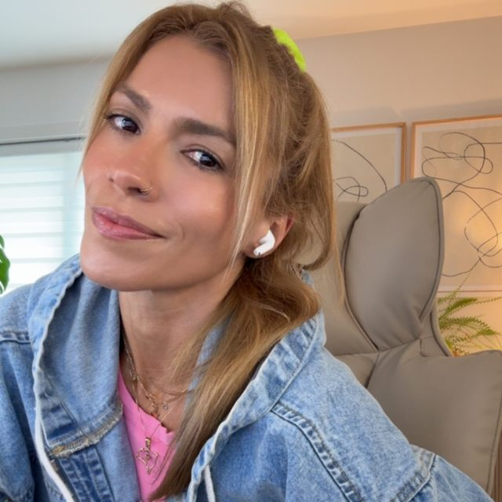

Revenue Onboarding Redesign
Redesigned onboarding for 500+ employees through needs analysis, e-learning, and stakeholder alignment.
9→4
months to proficiency, with a 20% performance lift
I build talent programs, interactive learning, AI tools, apps, courses, videos, and digital experiences that connect human growth to measurable outcomes.

I am Juliana, a CPTD®, Instructional Designer, and Integrative Coach. I build learning that changes what people do and coach the humans inside the system, too.
My work lives at the intersection of thoughtful design, measurable business outcomes, and genuine human growth. Whether I am shaping a leadership program or supporting one person through change, I begin by listening.
Create learning and coaching experiences that help people act with greater clarity and confidence.
The strongest solutions respect context, identity, lived experience, and the reality of the work.
Empathy and evidence belong together. I bring both to the questions, design, and outcomes.
Redesigned onboarding for 500+ employees through needs analysis, e-learning, and stakeholder alignment.
A cohort experience supporting the transition from individual contributor to people leadership.
Designing connected learning across IC pathways, People Team programs, VP development, and leadership onboarding.
Standardized how support quality was taught and measured, connecting behaviour directly to business outcomes.
CPTD®, Instructional Designer, and Integrative Coach. I build learning that actually changes what people do, and coach the humans inside the system too.
Designing and developing StackAdapt's leadership programs: Individual Contributor pathways, People Managers, VPs, and onboarding. Strengthening leadership capability across the organization.
Streamlined onboarding and enhanced program structure to improve how new hires integrate into Shopify's culture and workflows. Led the strategic redesign that cut ramp time and lifted performance.
Designed e-learning, built quality assurance training frameworks, and developed assessments that connected learning to on-the-job behaviour change.
Founder of Coaching, an integrative development coaching practice blending emotional intelligence, identity work, and behaviour change. EQ-i 2.0® certified. English and Portuguese.
Listen first. Design for real scenarios. Measure behaviour change, not clicks.
If learners are bored, nothing else matters. I design for engagement, relevance, and real application, because adults learn when it connects to their actual work.
Learning is an investment, and I treat it like one. Every program starts from a business goal and ends with evidence of impact, not just completion rates.
AI is part of how I research, design, prototype, and teach. I use it to make useful things faster, while keeping judgment, accessibility, and human expertise firmly in the process.
I turn ideas into working experiences people can actually use.
I help people and teams use AI with confidence, discernment, and a clear purpose.
Evidence-based models keep my work rigorous. Tap one to see how I use it.
Tap a framework to open it. Tap it again or use the close button to close it.
Check out some interactive samples that show how I turn learning strategy into practical experiences.
Redesigned onboarding for 500+ employees, cutting ramp time from 9 months to 4 and lifting performance by 20% through needs analysis, e-learning, and stakeholder alignment.
A cohort-based program bridging the IC-to-manager transition, built on identity shift, core people skills, and live application. Grounded in the 70-20-10 model with structured peer coaching.
Designing connected learning across IC pathways, People Team programs, VP development, and leadership onboarding.
Built a QA training framework that standardized how support quality was taught and measured, connecting behaviour directly to business outcomes.
Practice choosing feedback that combines genuine care with direct challenge through realistic workplace decisions.
Explore interactive module →Six short video lessons, knowledge checks, and practical resources covering the five EQ composites in one simple course.
Start the course →Let's talk about what your team needs.
Some of my favourite instructional design, talent development, leadership, and coaching books. Tap one to read more.
Tap any book to open it. Tap it again or use the close button to close it.
My coaching is grounded in emotional intelligence, identity work, and practical behaviour change. It creates space to understand what is happening beneath the surface, reconnect with what matters, and choose how you want to move forward.
I help companies build individual contributor pathways so people can grow, lead, and explore possibilities, including greater seniority in their craft and people management.
I help people quiet their mental noise, build emotional intelligence, and lead themselves with intention. My approach brings EQ, identity work, and behaviour change together in one grounded process.
Every conversation responds to the person and what they bring. This is a typical flow, not a rigid formula.
I create a grounded, psychologically safe space, establish rapport, and meet the person where they are before moving into the work.
We clarify what the client wants from the conversation and what would make the time feel genuinely valuable.
I listen deeply, reflect what I notice, and ask questions that help the client understand the situation, emotions, patterns, and context more fully.
We challenge assumptions, notice beliefs, reframe perspectives, and make room for insights that expand what the client can see.
The client generates possibilities and explores different ways forward. My role is to invite thinking, not prescribe advice.
The client chooses a next step that feels meaningful, realistic, and aligned with their goals and values.
We reflect on insights, confidence, commitments, and what support or accountability will help the client carry the learning forward.
Bring what you are navigating. We can talk about what support might look like, with no pressure.
Book a discovery callI created these tools to offer you a free, accessible place to pause, reflect, and reconnect with what you need. Explore them at your own pace, and start wherever feels most supportive today.
Free and self-led. No sign up. Nothing is saved or submitted.
Choose the one that feels useful to you.
Explore the five composites of emotional intelligence and reflect on where you're strong and where there's room to grow.
Open tool →Rate 8 life areas on a scale of 1 to 10. See where you're in balance and where you're not.
Open tool →Sort 30 values into three buckets, then narrow to your true top 5.
Open tool →Discover which inner force is guiding you right now: The Witness, The Inner Guide, or The Explorer.
Open tool →Map what energizes and what drains you, so you can design more of your week around what works.
Open tool →Notice the voice of your inner critic, then practice reframing it into something more useful.
Open tool →Turn a fuzzy intention into a clear commitment, with your why, likely obstacles, and the first step.
Open tool →Work through a tough decision by weighing it against your values, not just the pros and cons.
Open tool →Whether you want to build a talent track or need 1:1 strategic coaching, I'd love to hear from you.